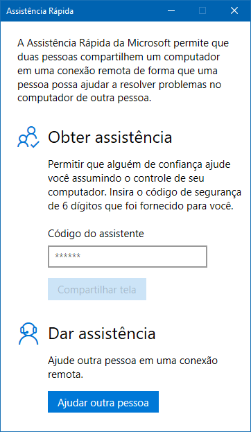
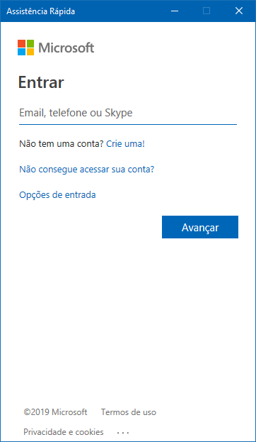
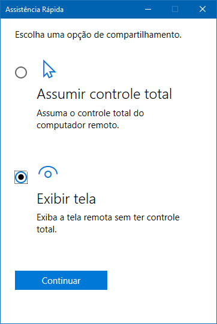

A Assistência Rápida no Windows 10 permite que você receba ou forneça assistência através de uma conexão remota. Este aplicativo é o sucessor da Assistência Remota, que foi introduzida originalmente no Windows XP. Com este aplicativo não é necessário abrir portas no firewall ou habilitar o acesso remoto nas configurações do sistema. Você só precisa usar sua conta da Microsoft.
Para começar, abra o aplicativo Assistência Rápidalocalizado na pastaAcessórios do menu Iniciar:

Agora você pode oferecer ou receber ajuda. Clique no botãoAjudar outra pessoa para oferecer a assistência:
Faça o login com sua conta da Microsoft e clique em Avançar:
Você receberá um código de segurançatemporário:
O código deverá ser usado no PC que receberá a assistência.

Digite-o no campoCódigo do assistente e clique no botão Compartilhar tela:

Você poderá optar por assumir o controle total do PC que receberá a assistência ou exibir a tela remota sem controle total
✅Tela remota
Você poderá dar instruções para a pessoa recebendo assistência e visualizar suas ações.
✅Controle total
No caso do controle total você é quem mexerá diretamente no PC da pessoa.
Selecione a opção apropriada, dê permissão e prossiga:


Se você selecionou a opção Exibir tela ou Controle total, a tela do PC da pessoa recebendo assistência será exibida como na imagem abaixo:

A barra de ferramentas da janela acima inclui controles como um botão para selecionar o monitor, ferramenta para anotações, botão para exibição da janela
com o tamanho real da do PC recebendo assistência, botão para enviar instruções via texto e até mesmo um botão para exibição do Gerenciador de Tarefas: